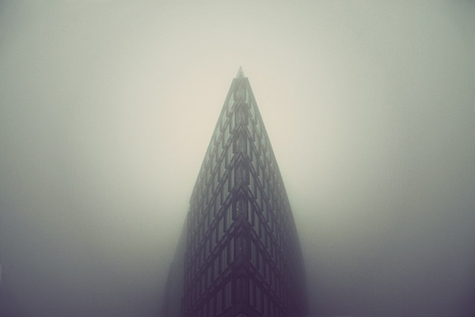
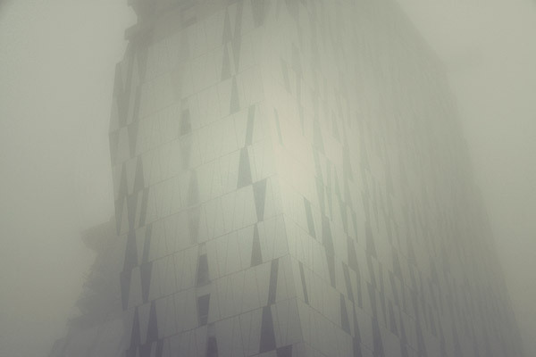
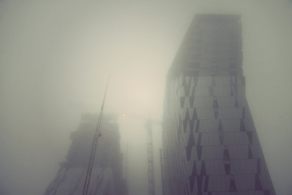
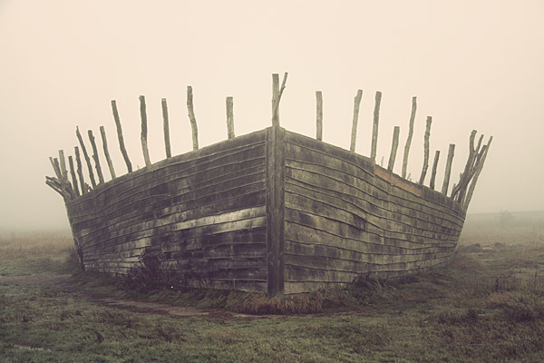

Deserted City
Moody and epic series of architecture photos, Deserted City, was captured by Denmark freelance landscape and architecture photographer Kim Høltermand. During the day Kim works as a fingerprints expert in The Crime Scene Unit of The Danish National Police.